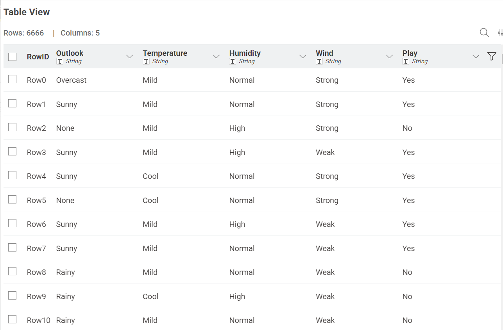
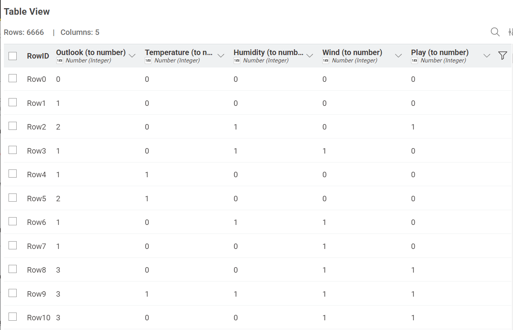
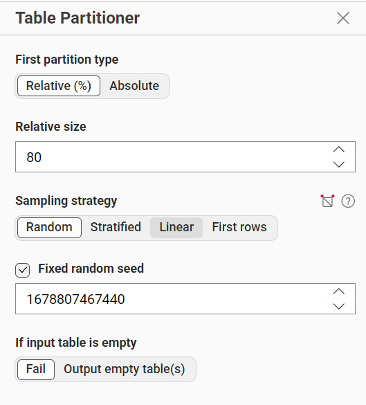
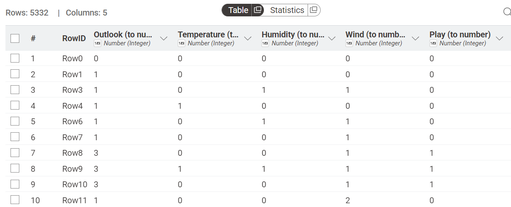
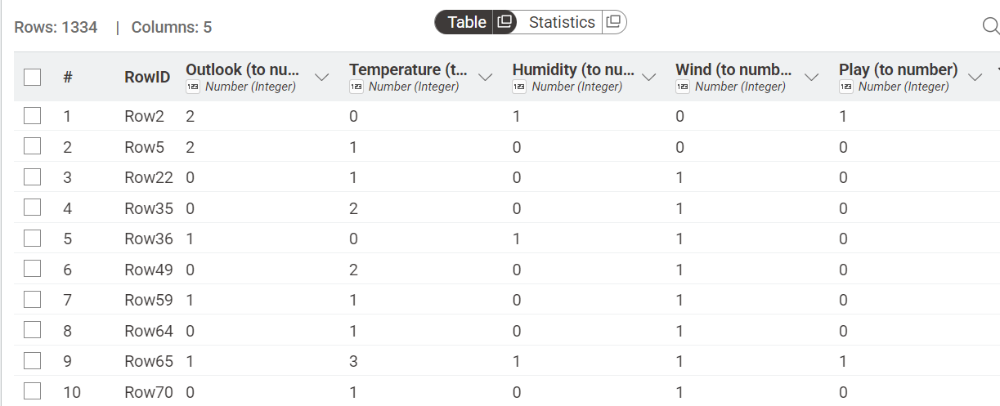
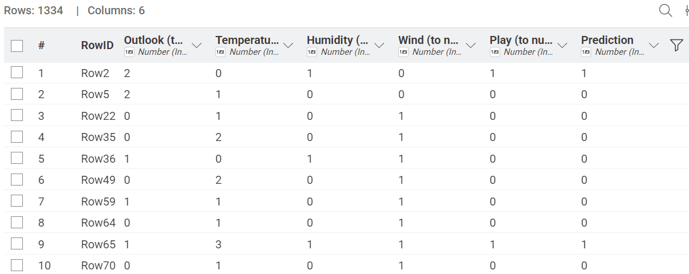
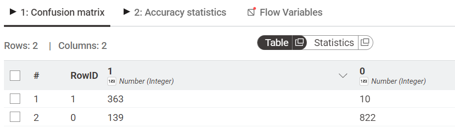
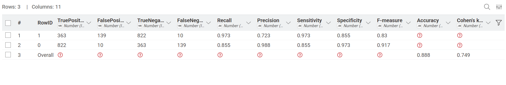
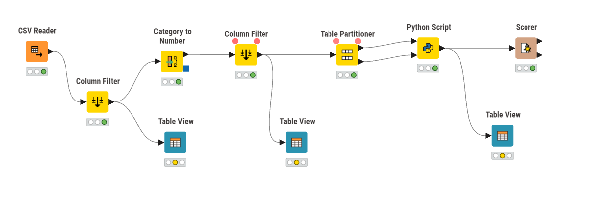

Tugas Analisis Data Menggunakan Naive Bayes#
Eksplorasi Dataset#
Data yang akan dianalisis adalah Data Play Tennis yang didapatkan dari Kaggle. Dataset Play Tennis digunakan untuk memprediksi apakah suatu kondisi cuaca memungkinkan untuk bermain tenis atau tidak. Meskipun dataset ini sering muncul dalam versi 14 baris di literatur, versi yang digunakan dalam analisis ini memiliki skala yang jauh lebih besar untuk meningkatkan performa model pembelajaran mesin.
Link Data : https://www.kaggle.com/datasets/milapgohil/play-tennis-dataset-weather-based-classifier
Jumlah Data : 6.666
Jumlah Atribut : 6 Atribut (5 identifier dan 1 class/target)
Atribut yang digunakan:
No |
Nama Kolom |
Deskripsi |
Peran dalam Model |
|---|---|---|---|
1 |
Day |
ID unik untuk setiap catatan (D1, D2, dst.) |
Identifier (Dihapus saat training) |
2 |
Outlook |
Kondisi cuaca (Overcast, Sunny, Rainy) |
Fitur (Kategorikal) |
3 |
Temperature |
Suhu udara (Hot, Mild, Cool) |
Fitur (Kategorikal) |
4 |
Humidity |
Tingkat kelembapan (High, Normal) |
Fitur (Kategorikal) |
5 |
Wind |
Kekuatan angin (Weak, Strong) |
Fitur (Kategorikal) |
6 |
Play |
Keputusan bermain (Yes, No) |
Target Class |
Preprocessing (Transformasi Data)#
Dataset Play Tennis merupakan dataset yang kategorikal, maka pada preprocessing tahap normalisasi yang dilakukan menggunakan encoding. Pada analisis data menggunakan Naive Bayes ini, terdapat dua jenis teknik encoding utama yang diterapkan untuk mengubah data teks (kategorikal) menjadi format numerik.
Proses Encoding Data#
Berikut adalah rincian encoding yang digunakan beserta pemetaan (mapping) nilainya berdasarkan dataset play-tennis-naive-bayes.csv:
Atribut |
Nilai Teks |
Nilai Numerik (Encoding) |
|---|---|---|
Outlook |
Overcast |
0 |
Sunny |
1 |
|
Rainy |
3 (Nilai 2 biasanya mewakili null/None) |
|
Temperature |
Cool |
0 |
Hot |
1 |
|
Mild |
2 |
|
Humidity |
High |
0 |
Normal |
1 |
|
Wind |
Strong |
0 |
Weak |
1 |
|
None |
2 |
|
Play (Target) |
Yes |
0 |
No |
1 |
Berikut merupakan data sebelum dilakukan encoding:

Dan berikut merupakan data yang sudah dilakukan encoding:

Proses Partisi Data#
Setelah data melalui tahap normalisasi (encoding), langkah selanjutnya adalah membagi dataset menjadi dua bagian utama menggunakan rasio 80:20. Pembagian ini bertujuan untuk menyediakan data yang cukup untuk belajar, namun tetap menyisakan porsi yang adil untuk pengujian objektif. Pada pembagian partisi ini dibagi menjadi :
80% Data Training: Dipakai digunakan untuk belajar model Naive Bayes. Jadi dari data ini, model belajar pola hubungan antara fitur (Outlook, Temperature, dll.) dengan hasil akhirnya (Play)
20% Data Testing: Dipakai buat ngetes model. Data ini tidak ikut dipakai saat belajar, jadi bisa lihat seberapa bagus model memprediksi data baru.
Pembagian Data
Total Data : 6.666
Data Training (80%) : 5.332
Data Testing (20%) : 1.334

Data Training (80%)

Data Testing (20%)

Implementasi Knime dan Menggunakan library scikit-learn#
Implementasi dilakukan menggunakan tools KNIME dengan memanfaatkan library scikit-learn untuk perhitungan metode Naive Bayes.
Berikut adalah implementasi alur kerja pada KNIME. Pada nodes Python Script dikonfigurasi dengan dua input port untuk memisahkan data training dan data testing:
Port 1 (Atas): Menerima 80% data (5.332 baris) untuk proses Training.
Port 2 (Bawah): Menerima 20% data (1.334 baris) untuk proses Testing.
Implementasi Script Python#
import knime.scripting.io as knio
from sklearn.naive_bayes import CategoricalNB
# 1. Ambil data dari dua port yang berbeda
# Port 0 (Atas) = Data Training (80%)
df_train = knio.input_tables[0].to_pandas()
# Port 1 (Bawah) = Data Testing (20%)
df_test = knio.input_tables[1].to_pandas()
# 2. Pembersihan Data (Hapus kolom 'Day' jika ada)
for df in [df_train, df_test]:
if 'Day' in df.columns:
df.drop(columns=['Day'], inplace=True)
# 3. Pisahkan Fitur dan Target untuk Training
X_train = df_train.iloc[:, :-1].values
y_train = df_train.iloc[:, -1].values
# 4. Pisahkan Fitur untuk Testing (Ujian)
X_test = df_test.iloc[:, :-1].values
# 5. Training Model (Belajar dari data 80%)
model = CategoricalNB()
model.fit(X_train, y_train)
# 6. Prediksi (Ujian menggunakan data 20% yang belum pernah dilihat)
predictions = model.predict(X_test)
# 7. Tempelkan hasil prediksi ke tabel testing agar bisa dicek Scorer
df_test['Prediction'] = predictions
# 8. Output hasil ujian ke KNIME
knio.output_tables[0] = knio.Table.from_pandas(df_test)
Hasil Prediksi dan Evaluasi Model#
Setelah script tersebut dijalankan, maka akan menghasilkan prediction sebagai berikut:

Untuk Confusion Matrix dari hasil pengujian (data yang belum pernah dilihat model) dapat dilihat di bawah ini:

Nilai akurasi dari prediction ini didapatkan :

Data sebanyak 1.334 merupakan jumlah data yang digunakan pada partisi kedua (20% data testing). Memiliki nilai akurasi 0.888
Berikut merupakan implementasi pada knime beserta nodes yang digunakan:
